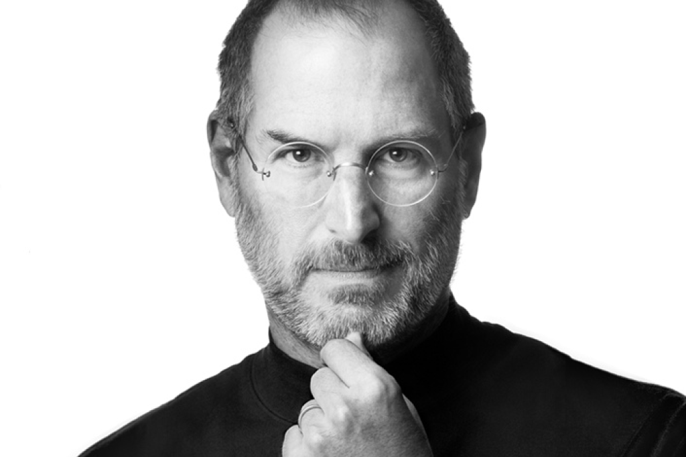

William Henry "Bill" Gates III KBE • GCIH (Seattle, 28 de outubro de 1955) é um magnata, empresário, diretor executivo, investidor, filantropo e autor norte-americano, que ficou conhecido por fundar, junto com Paul Allen a Microsoft,[2] a maior e mais conhecida empresa de software do mundo em termos de valor de mercado. Gates ocupa atualmente o cargo de presidente não-executivo da Microsoft,[3] além de ser classificado regularmente como a pessoa mais rica do mundo, posição ocupada por ele de 1995 a 2007,[4] 2009,[5] e de 2014 a 2017.[6][7][8][9] É um dos pioneiros na revolução do computador pessoal. Biografia Infância e juventude Gates nasceu em uma família de classe média de Seattle. Seu pai, William H. Gates, era advogado de grandes empresas, e sua mãe, Mary Maxwell Gates, foi professora da Universidade de Washington e diretora de bancos. Bill Gates e as suas duas irmãs, Kristanne e Libby, frequentaram as melhores escolas particulares de sua cidade natal, e Bill também participou do Movimento Escoteiro ainda quando jovem. Bill Gates,[10] foi admitido na prestigiosa Universidade Harvard, (conseguindo 1 590 SATs dos 1 600 possíveis[11]) mas abandonou os cursos de Matemática e Direito no terceiro ano,[12] para dedicar-se à Microsoft. Trabalhou na Taito com o desenvolvimento de software básico para máquinas de jogos eletrônicos (fliperamas) até seus 16 anos. Também trabalhou como pesquisador visitante na University of Massachusetts at Amherst, UMASS, Estados Unidos, quando, com 17 anos, desenvolveu junto com Paul Allen um software para leitura de fitas magnéticas, com informações de tráfego de veículos, em um chip Intel 8008. Com esse produto, Gates e Allen criaram uma empresa, a Traf-o-Data, porém os clientes desistiram do negócio quando descobriram a idade dos donos.[13]
Steven Paul Jobs (São Francisco, 24 de fevereiro de 1955 – Palo Alto, 5 de outubro de 2011)[2] foi um inventor, empresário e magnata norte-americano do setor da informática. Notabilizou-se como cofundador, presidente e diretor executivo da Apple Inc.[6] e por revolucionar seis indústrias: computadores pessoais, filmes de animação, música, telefones, tablets e publicações digitais.[7] Além de sua ligação com a Apple, foi diretor executivo da empresa de animação por computação gráfica Pixar e acionista individual máximo da The Walt Disney Company.[8] Morreu no dia 5 de outubro de 2011, aos 56 anos de idade, devido a um câncer pancreático.[2] Currículo de Steve Jobs[9] "Estou procurando um lugar que necessite de muitas reformas e consertos, mas que tenha fundações sólidas. Estou disposto a demolir paredes, construir pontes e acender fogueiras. Tenho uma grande experiência, um monte de energia, um pouco dessa coisa de ‘visão’ e não tenho medo de começar do zero". No final da década de 70, Jobs, em parceria com Steve Wozniak e Mike Markkula, entre outros, desenvolveu e comercializou uma das primeiras linhas de computadores pessoais de sucesso, a série Apple II.[6] No começo da década de 1980, ele estava entre os primeiros a perceber o potencial comercial da interface gráfica do usuário guiada pelo Mouse (informática), o que levou à criação do Macintosh.[10] Após perder uma disputa de poder com a mesa diretora em 1985, Jobs foi demitido da Apple e fundou a NeXT, uma companhia de desenvolvimento de plataformas direcionadas aos mercados de educação superior e administração. A compra da NeXT pela Apple em 1996 levou Jobs de volta à companhia que ele ajudara a fundar, sendo então seu CEO de 1997 a 2011, ano em que anunciou sua renúncia ao cargo, recomendando Tim Cook como sucessor.[11] Em 2015, houve o lançamento do filme biográfico Steve Jobs, onde conta parte da vida do co-fundador da Apple Inc., remetendo à lançamentos feitos no período entre 1984 e 1998 como o Apple Macintosh, NeXT Computer e o iMac G3. O filme teve sua estreia em 5 de setembro no Tellurid Film Festival. A atriz Kate Winslet ganhou o Globo de Ouro e o BAFTA como melhor atriz-coadjuvante por seu papel, além de ter sido nomeada também para o Oscar na mesma categoria. O ator Michael Fassbender também concorreu ao Oscar de Melhor Ator, por interpretar Jobs. O filme ganhou o Globo de Ouro de Melhor Roteiro, escrito por Aaron Sorkin.[12][13]

Linus Benedict Torvalds (Helsínquia, 28 de dezembro de 1969) é um engenheiro de software, nascido na Finlândia e naturalizado estado-unidense em 2010,[1][2] criador, e por muito tempo o desenvolvedor mais importante do núcleo Linux, sendo utilizado em importantes sistemas Linux, Android e Chrome OS. É também o criador do Git, sistema de controle de versão amplamente utilizado, e o aplicativo para planejamento e registro de mergulho, Subsurface.[3] Junto ao médico Shinya Yamanaka, foi honrado pela Academia de Tecnologia da Finlândia, em 2012, com o Prêmio de Tecnologia do Milênio “em reconhecimento à sua criação de um novo núcleo de sistema operacional para computadores, que levou ao extensivamente utilizado, núcleo Linux”.[4] Torvalds também notoriamente recebeu os prêmios: Pioneiro da Computação da IEEE Computer Society,[5] e o IEEE Masaru Ibuka Consumer Electronics Award, patrocinado pela Sony. Biografia Torvalds nasceu em Helsínquia, na Finlândia. É filho dos jornalistas Anna e Nils Torvalds,[6] e neto do estatístico Leo Törnqvist e do poeta Ole Torvalds. Seus pais eram radicais do campus da Universidade de Helsínquia, na década de 1960. Sua família pertence à minoria de língua sueca (5,5 % da população da Finlândia). Seu interesse por computadores começou com um Commodore VIC-20. Nessa época, ele fica conhecido por ter escrito um clone do Pac-Man chamado Cool Man.[carece de fontes] Linus Torvalds é casado com Tove Torvalds (Monni, de nascimento) — hexacampeã nacional de karatê na Finlândia — a qual ele conheceu no outono de 1993. Linus passava exercícios introdutórios no laboratório de informática para os alunos, e solicitou aos participantes do curso que lhe enviassem um e-mail como teste, no qual ela o convidou para saírem em um primeiro encontro. Mais tarde, Linus e Tove se casaram e tiveram três filhas: Patricia Miranda (nascida em 1996), Daniela Yolanda (nascida em 1998), e Celeste Amanda (nascida em 2000), das quais duas nasceram nos Estados Unidos da América. Linus usa suas datas de nascimento (em hexadecimal) como aceitáveis números mágicos na chamada de reinicialização do núcleo (reboot). Linus define-se como sendo “completamente ateísta religioso”, adicionando: “acredito que as pessoas parecem pensar que a religião traz moral e apreciação a natureza. Penso que esta afasta de ambos. Dando as pessoas a desculpa para dizer: ‘Oh, a natureza foi apenas criada’. E assim, o ato da criação é visto como algo miraculoso. Eu aprecio o fato que: ‘Uau, é incrível que algo assim primeiramente tenha acontecido’”. Mais tarde comentou que, enquanto na Europa, religião é basicamente uma questão pessoal, nos Estados Unidos, ela se torna algo bastante politizado. Discutindo a questão da separação entre Estado e Igreja, Torvalds disse: “É um tanto irônico que em tantos países europeus, exista, na verdade um tipo de ligação legal entre o Estado e a religião do Estado”. Em 2010, Torvalds tornou-se cidadão estado-unidense, e se registrou para votar no país. Não é afiliado a nenhum partido político do país, acrescentando: “Em parte tenho demasiado orgulho pessoal para querer me associar a qualquer um deles, francamente”.